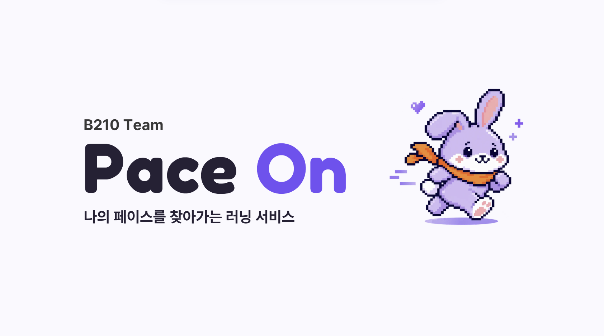
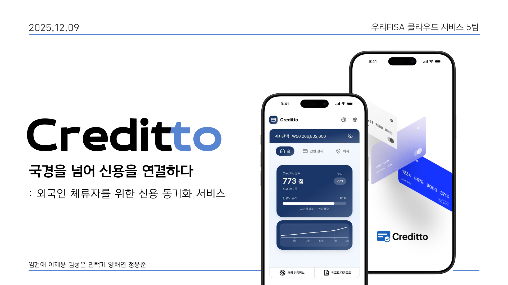

01
PRODUCT · 2026
PACEON
나의 페이스를 찾아가는 러닝 서비스

빠르게 끝내는 것보다 다시 고치지 않을 기준을 먼저 세웁니다
실패 상황까지 설계하고 판단의 근거를 코드와 기록으로 남깁니다
HELLO, I AM
Backend Developer
낯선 시스템의 흐름을 차분히 읽고
안정적으로 개선하는 과정을 좋아합니다
 Java
Java Redis
Redis AWS EC2
AWS EC2 Jenkins
Jenkins C# WinForms
C# WinForms C++ MFC
C++ MFCPRODUCT · 2026
나의 페이스를 찾아가는 러닝 서비스

AI REALTIME COMMUNICATION · 2026
영상통화와 AI 대화 주제, 공동 그림판, 그림일기를 연결한 가족 서비스


FOUNDATION BEFORE SPEED
정상 흐름뿐 아니라 경계 조건과 실패 상황을 함께 정의합니다
환경 분리와 리뷰 규칙처럼 반복되는 결정을 코드와 프로세스로 만듭니다
증상을 덮지 않고 로그와 실행 흐름을 따라 재현 가능한 해결책을 찾습니다
LEARN · BUILD · IMPROVE
소프트웨어 개발에 필요한 전공 기반을 쌓고 프로젝트와 실무 경험으로 확장했습니다
C++ MFC ERP/CAD와 C#/.NET, MSSQL 환경을 분석하고 장애를 재현해 로그인 실패 문제를 복구했습니다
금융 도메인 기반 백엔드와 인프라를 학습하고 팀장으로 서비스 구조와 협업 기준을 정리했습니다
알고리즘과 CS 기본기를 다지고 백엔드·인프라 프로젝트로 구현의 근거를 넓히고 있습니다
TECHNICAL TOOLKIT
LET'S BUILD IT RIGHT